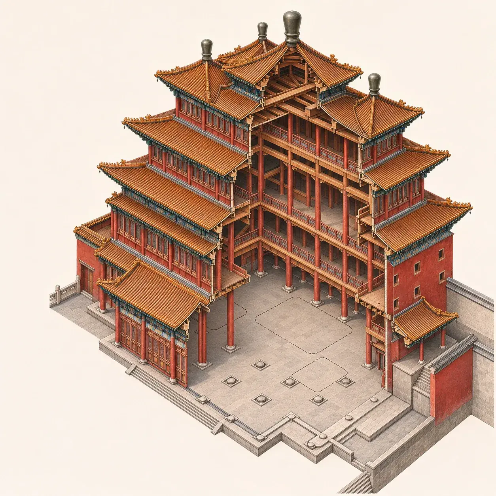
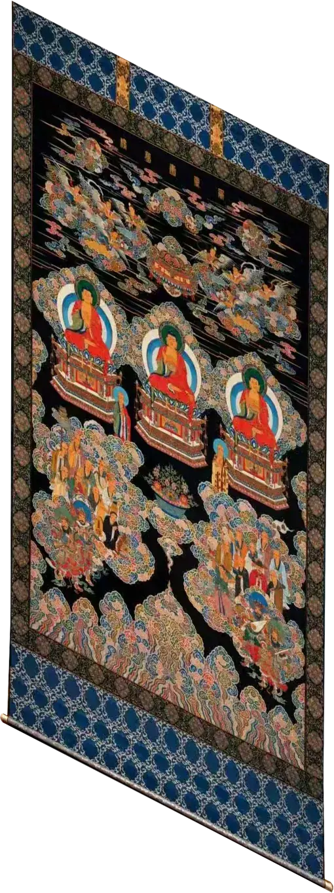
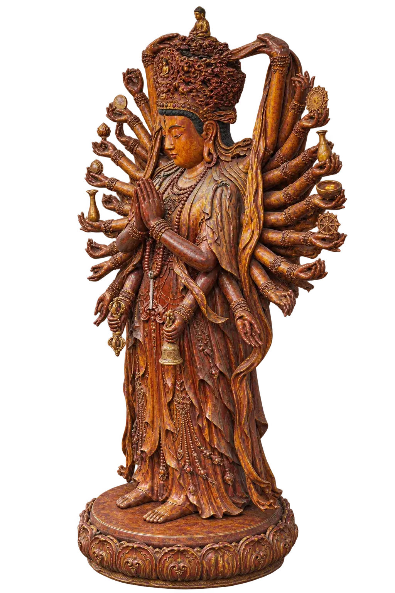
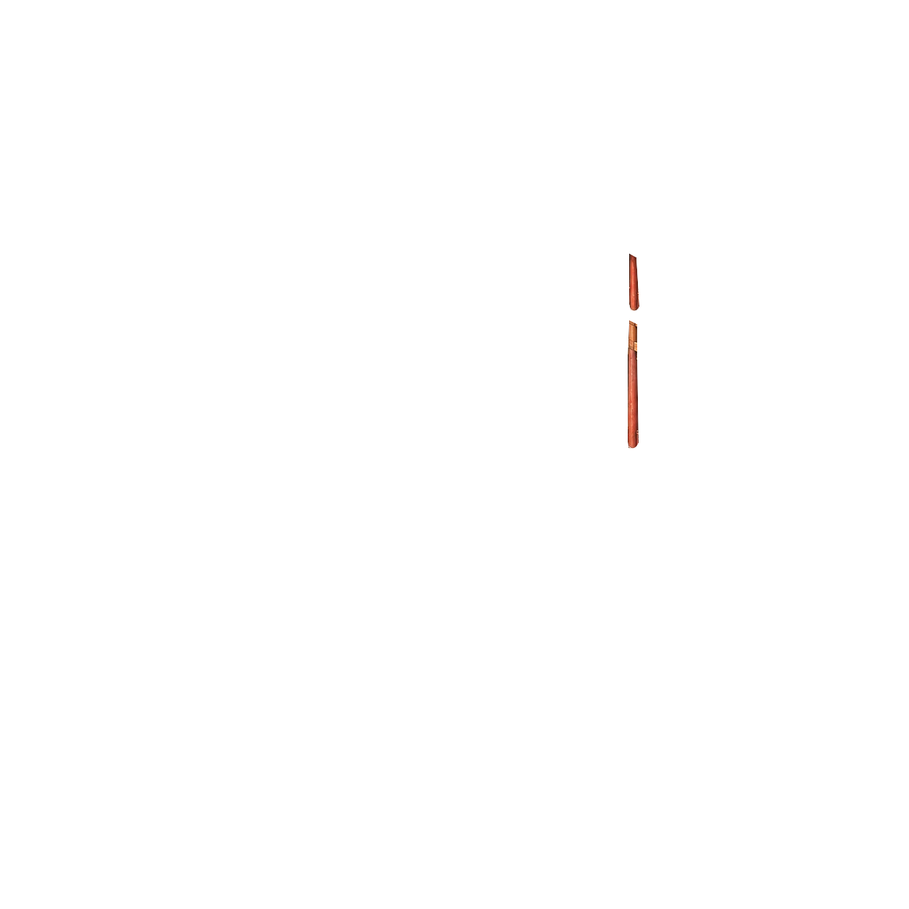
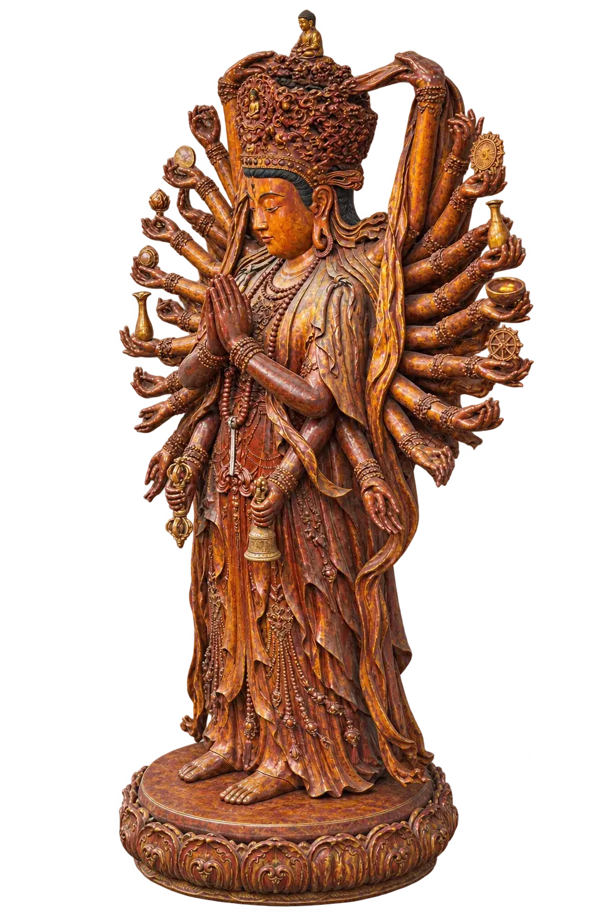

<!doctype html>
<html lang="zh-CN">
<meta charset="utf-8">
<meta name="viewport" content="width=device-width, initial-scale=1">
<meta name="description" content="拖动千手观音像，在普宁寺大乘阁的剖视图中完成布置。">
<title>大乘阁 · 千手观音布置</title>
<style>
*{box-sizing:border-box}
body{margin:0;background:#eee7db;color:#392e23;font:16px system-ui,sans-serif}
main{position:relative;width:min(100%,1280px);min-height:100svh;margin:auto;padding:24px;display:grid;grid-template-columns:minmax(235px,300px) minmax(0,1fr);gap:20px;align-items:center}
aside{display:flex;flex-direction:column;gap:14px}
h1{font-family:"Songti SC","Noto Serif CJK SC",serif;font-size:clamp(27px,3vw,42px);line-height:1.15;margin:0;color:#533320}
small{color:#72513b;letter-spacing:.14em}
p{margin:0;line-height:1.55}
.tray{height:min(38svh,310px);min-height:150px;border:1px solid #c7ad8f;background:#f7f0e5;border-radius:12px;display:grid;align-items:end;text-align:center;padding:10px;color:#735a45;font-size:13px}
.controls{display:flex;gap:10px;flex-wrap:wrap}
.controls button{border:1px solid #aa8d6f;background:#f8f0e3;border-radius:7px;color:#483320;font:inherit;padding:7px 12px;cursor:pointer}
.controls button:disabled{opacity:.45;cursor:default}
#status{font-size:14px;min-height:2.8em;color:#624532}
.board{width:min(100%,calc(100svh - 48px));aspect-ratio:1;justify-self:center;position:relative;background:#f9f0e4;border-radius:12px;overflow:hidden;box-shadow:0 0 0 1px #c9b497,0 14px 36px #644b3021}
.hall,.guide{position:absolute;inset:0;width:100%;height:100%;pointer-events:none;user-select:none}
.guide polygon{fill:#e5bd654f;stroke:#7d4e1d;stroke-width:3;stroke-dasharray:7 5;stroke-linejoin:round}
.guide polygon{visibility:hidden}
.board.hint-statue .statue-guide,.board.hint-scroll .scroll-guide,.board.hint-altar .altar-guide{visibility:visible}
.guide .scroll-guide{fill:#f3d59436;stroke:#ffe5a0;stroke-width:4}
.board.near-scroll .scroll-guide{fill:#f5d78980;stroke:#fff0b4}
.board.near-statue .statue-guide,.board.near-altar .altar-guide{fill:#fff0a0a0;stroke:#75400d;stroke-width:5}
.tray{grid-template-columns:repeat(3,minmax(0,1fr));gap:4px}
.tray span+span{border-left:1px solid #c7ad8f}
.arranged{position:absolute;height:auto;pointer-events:none;user-select:none}
#statue-placed{z-index:2;transform:translate(-47%,-94%)}
#scroll-placed{z-index:1;transform:translate(-50%,-50%);filter:saturate(.78) brightness(.98) contrast(.94) sepia(.10)}
.piece.scroll img{filter:saturate(.77) brightness(.90) contrast(.94)}
.piece.scroll{transform:translate(-50%,-50%)}
.piece.altar,#altar-placed{transform:translate(-50%,-98%)}
#altar-placed{z-index:4;filter:saturate(.72) brightness(.89) sepia(.10)}
.altar-shadow{position:absolute;inset:0;width:100%;height:100%;pointer-events:none;visibility:hidden}
.board.altar-done .altar-shadow{visibility:visible}
.shadow{position:absolute;inset:0;width:100%;height:100%;pointer-events:none;opacity:0}
.board.hint-statue .shadow{opacity:.64}
.board.statue-done .shadow{opacity:1}
.piece:not(.scroll) img{filter:saturate(.83) contrast(.96) brightness(.98)}
#statue-placed{filter:saturate(.77) contrast(.96) brightness(.99) sepia(.08)}
.scroll-mount{position:absolute;inset:0;width:100%;height:100%;pointer-events:none;visibility:hidden}
.board.scroll-done .scroll-mount{visibility:visible}
.foreground{position:absolute;inset:0;width:100%;height:100%;z-index:3;pointer-events:none;visibility:hidden}
.board.statue-done .foreground{visibility:visible}
.board.scroll-done .foreground{clip-path:polygon(0 0,100% 0,100% 100%,70% 100%,70% 30%,0 30%)}
.target{position:absolute;left:57.7%;top:66.7%;width:13%;height:9%;transform:translate(-50%,-50%);border:0;background:transparent;border-radius:50%;pointer-events:none}
.target.ready{pointer-events:auto;cursor:pointer;z-index:4}
.target.scroll-target{border-radius:5px;height:22%;width:10%}
.piece{position:absolute;z-index:5;transform:translate(-47%,-94%);padding:0;border:0;background:none;cursor:grab;touch-action:none;user-select:none}
.piece.drag{cursor:grabbing;z-index:6}
.piece img{display:block;width:100%;height:auto;pointer-events:none}
button:focus-visible{outline:3px solid #9a5629;outline-offset:4px}
@media(max-width:690px){
 main{display:flex;flex-direction:column;gap:12px;padding:12px;justify-content:center}
 aside{width:100%;display:grid;grid-template-columns:1fr 146px;gap:5px 12px;align-items:center}
 aside small{grid-column:1} h1{grid-column:1;font-size:25px}
 aside p{grid-column:1;font-size:13px}
 .tray{grid-column:2;grid-row:1 / span 5;height:135px;min-height:0;padding:4px;font-size:11px}
 .controls{grid-column:1}.controls button{font-size:13px;padding:5px 8px}
 #status{min-height:1.5em}.board{width:min(100%,calc(100svh - 165px))}
}

.kesi-highlight{font-weight:800;color:#a44b2f}.tray .kesi-highlight{font-size:1.08em}aside>small{font-size:12px;letter-spacing:.08em;line-height:1.7}#status{font-size:12px;line-height:1.7;min-height:2.8em}.controls{margin-top:-6px}

.placement-title{font-size:clamp(21px,2.6vw,31px);font-weight:800;line-height:1.45;letter-spacing:1px}.tray{height:min(34svh,260px)}@media(max-width:690px){aside .placement-title{grid-column:1;font-size:20px}.tray{grid-row:1 / span 4;height:125px}}
</style>
<main id="game">
<aside>
<h1 class="placement-title">藏传佛教建筑模型布置</h1>
<p id="instruction">点选或拖动素材，查看它们在殿内的布置位置。</p>
<div id="tray" class="tray"><span>千手观音</span><span><strong class="kesi-highlight">缂丝</strong>佛教挂画</span><span>供香台</span></div>

<p id="status" role="status" aria-live="polite">用鼠标或手指拖动。也可点选佛像后再点落点。</p>
<div class="controls"><button id="reset" disabled>重新布置</button></div>
</aside>
<section class="board" id="board" aria-label="大乘阁布置区域">



<svg class="guide" viewBox="0 0 1254 1254" aria-hidden="true"><polygon class="statue-guide" points="630,823 707,772 846,846 768,905"/><polygon class="scroll-guide" points="734,374 877,446 875,763 732,690"/><polygon class="altar-guide" points="597,875 617,863 672,892 652,905"/></svg>
<!-- The original column pixels sit in front of the hands only after placement. -->





<button class="target" id="altar-target" aria-label="放置供香台" disabled></button>
<button class="target" id="statue-target" aria-label="放置千手观音像" disabled></button>
<button class="target scroll-target" id="scroll-target" aria-label="悬挂缂丝佛教挂画" disabled></button>
</section>
<button class="piece" id="statue-piece" aria-label="选取千手观音像"></button>
<button class="piece scroll" id="scroll-piece" aria-label="选取缂丝佛教挂画"></button>
<button class="piece altar" id="altar-piece" aria-label="选取供香台"></button>
</main>
<script src="game.js?v=altar-repositioned"></script>
</html>
